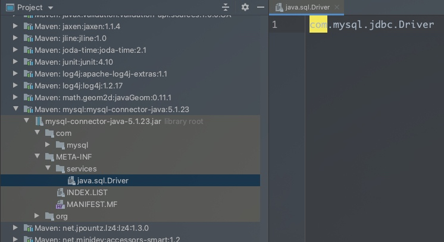
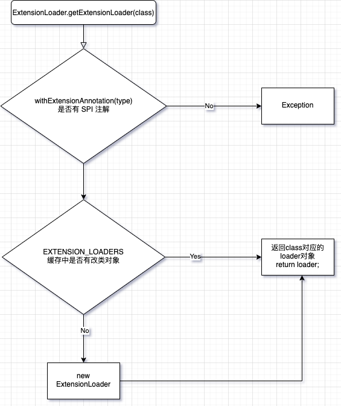
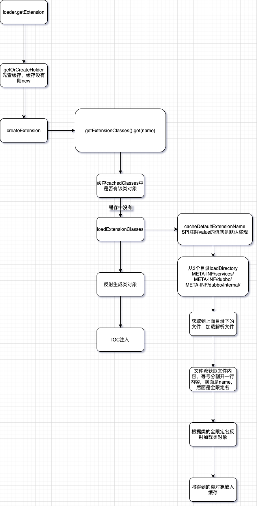

Dubbo SPI
Java SPI
SPI 是服务发现机制，为某个接口寻找服务的实现。
是 JDK 6 的特性，ServiceLoader。
ServiceLoader启动时会到 resource/META-INF/services/ 目录下读取以 实现类的全限定名 命名的文件。
程序通过 ServiceLoader 动态加载实现类模块，通过扫描 META-INF/services 目录下的配置文件找到实现类的全限定名，把类加载到JVM;
demo：
// 一个接口，两个实现类
public interface Fruit {
void printName();
}
public class Apple implements Fruit {
@Override
public void printName() {
System.out.println("Apple");
}
}
public class Orange implements Fruit {
@Override
public void printName() {
System.out.println("Orange");
}
}
在 src/main/resources/META-INF/services 下新建文件 xxx.xxx.xx.Fruit，这个文件名就是Fruit接口的全限定名，
文件中的内容是 Apple、Orange类的全限定名，可以配置一个也可以配置多个。
public static void main(String[] args) {
ServiceLoader<Fruit> fruits = ServiceLoader.load(Fruit.class);
for (Fruit fruit : fruits) {
fruit.printName();
}
}
会依次调用xxx.xxx.xx.Fruit文件中配置的具体实现类。
应用场景：各种数据库连接

Dubbo SPI
Dubbo SPI 扩展点加载，从 JDK 标准的 SPI 扩展点机制加强而来。
加载的路径约定为： resource/META-INF/dubbo/接口全限定名
增加了对扩展点 IOC 和 AOP 的支持，一个扩展点可以直接 setter 注入其它扩展点。
将上面例子中的xx.Fruit文件移到 resource/META-INF/dubbo/ 目录下，同时需要在 Fruit 类上加 Dubbo 注解 @SPI。
demo：
public static void main(String[] args) {
ExtensionLoader<Fruit> extensionLoader = ExtensionLoader.getExtensionLoader(Fruit.class);
Fruit apple = extensionLoader.getExtension("apple");
Fruit orange = extensionLoader.getExtension("orange");
apple.printName();
orange.printName();
}
Dubbo SPI 的实现封装在 ExtensionLoader 中。
Dubbo SPI 的实现
ExtensionLoader.getExtensionLoader
ExtensionLoader.getExtensionLoader(ExtensionFactory.class).getAdaptiveExtension())
extensionLoader.getExtension
ExtensionLoader.getExtensionLoader

这个方法的逻辑比较简单，是否有 SPI 注解，缓存中没有的话就 new 一个 ExtensionLoader 出来，不过在 new 的时候会去获取 objectFactory 属性的值。第一次 new 的话，会加载 ExtensionFactory，并获取它的默认实现。
private ExtensionLoader(Class<?> type) {
this.type = type;
objectFactory = (type == ExtensionFactory.class ? null : ExtensionLoader.getExtensionLoader(ExtensionFactory.class).getAdaptiveExtension());
}
getAdaptiveExtension()
SPI 修饰的接口的实现类中，获取带有 @Adaptive 注解的实现。
在同一个接口的实现类中，@Adaptive 注解只能修饰其中的一个实现类，表示该接口的默认实现。
getAdaptiveExtension 方法就是获取这个默认的实现类。
extensionLoader.getExtension
public T getExtension(String name) {
if (StringUtils.isEmpty(name)) {
throw new IllegalArgumentException("Extension name == null");
}
if ("true".equals(name)) {
return getDefaultExtension();
}
// 获取holder，相当于持有对象的锁
// 从缓存map cachedInstances 中获取，获取不到就new
final Holder<Object> holder = getOrCreateHolder(name);
Object instance = holder.get();
// 双重检测单例模式
// 此处这个锁对象是holder，而不是整个class对象，锁粒度更小，并发更高
if (instance == null) {
synchronized (holder) {
instance = holder.get();
if (instance == null) {
instance = createExtension(name);
holder.set(instance);
}
}
}
return (T) instance;
}

拓展类对象的获取过程，都是先从缓存中查找，没有在新建对象。最重要的实现逻辑是在 createExtension 方法中。
https://dubbo.apache.org/zh/docs/v2.7/dev/spi/
https://dubbo.apache.org/zh/docs/v2.7/dev/source/dubbo-spi/
Copyright © 2015 Powered by MWeb, Theme used GitHub CSS.